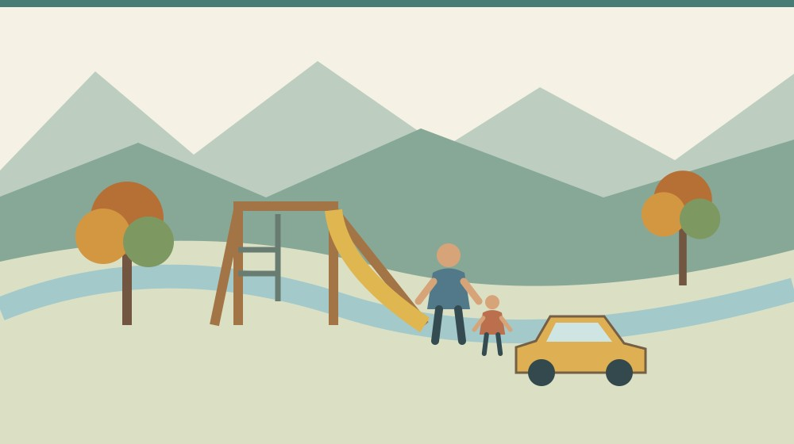
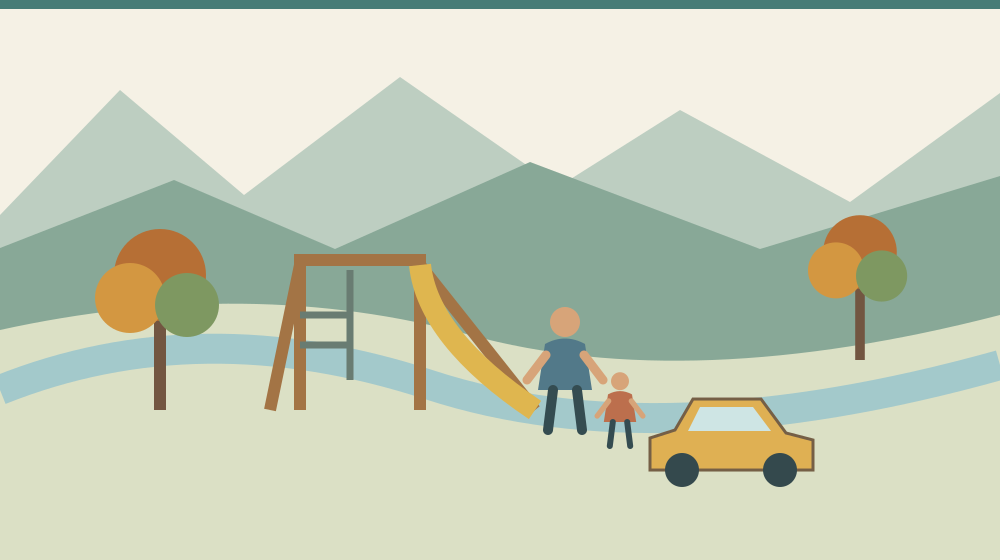
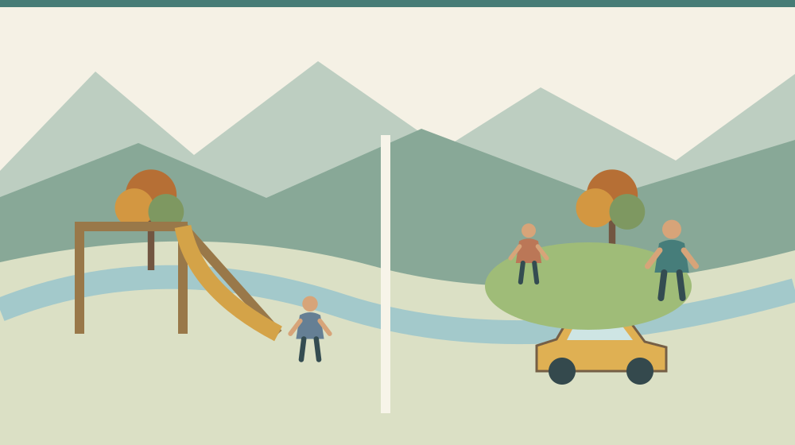

森町の公園比較｜駐車場と遊具で選ぶ休日

Q. 森町で子どもを遊ばせるなら、車で行けて遊具もある公園はどこ？
町の公園一覧では、天宮公園は駐車場・日陰・遊具があるとされています。森第一・第二・第三公園は遊具と日陰がある一方、駐車場はありません。資料は現地の最新状態を保証しないため、候補を選んでから利用状況を確認します。2026年11月3日の祝日に向け、家族の移動を試す材料にできます。
森町の休日を、普段の遊び場から考える
森町の公園で過ごす時間は、移住後の暮らしを想像する材料になります。子どもを連れて出かける家族は、着替えや飲み物を用意し、帰宅後の食事まで段取りをしています。公園を使える状態に保つ側にも、点検や手入れの仕事があります。
私、大石浩之（磐田市／不動産業）は、家の広さに加えて、家から外へ出やすいかも住まい選びの条件にしたいと考えています。景色のよい場所が近くても、毎回車を停める場所で迷うなら、普段の利用は別に考える必要があります。
2026年10月25日は日曜日です。内閣府の祝日表では11月3日が文化の日とされています。この記事はその前の外遊び準備として、既存の公園資料を読み直すものです。11月3日に公園の特別イベントがあるという案内ではありません。
ここでは静岡県周智郡森町の公園を扱います。同じ名称の公園が別の地域にある場合も、所在地まで見て区別してください。公園名だけで地図を検索して行き先を決めず、町公式の住所と照合する順序を提案します。
事実整理：高校生の調査と町の一覧を分けて読む
森町「森町公園マップ」は、遠江総合高校の生徒が作った資料を紹介しています。令和5年度の「遠高生が考える『心和らぐ森町』プロジェクト」の子育てチームによるものです。ページの更新日は2024年12月26日です。
町の説明では、生徒自身が公園へ足を運んで調査しています。マップ内のランキングもアンケート結果に基づくとされています。誰かが机上で並べた施設名だけではなく、調べる過程を持つ資料である点を、最初に受け止めたいと思います。
一方、町内すべての公園を掲載した資料ではないと明記されています。マップにない公園が使えない、あるいは価値が低いという意味ではありません。掲載範囲と、ランキングが回答者の評価に基づくことを分けて読む必要があります。
駐車場や遊具の比較には、別の町公式「おでかけ」の公園一覧も使います。こちらの更新日は2023年4月3日で、住所、駐車場、日陰、遊具、その他の欄があります。2026年10月25日に本文を確認しましたが、現地を再調査した資料ではありません。
古い更新日の資料を、新しく整備された公園のニュースにはしません。家族の候補選びに使える既存資料として紹介し、訪問前に現地の利用状況を確かめる構成にします。遊具の写真や地図があることと、今日その遊具を使えることは別です。

駐車場と遊具がそろう候補、そろわない候補
森町「おでかけ」の一覧では、天宮公園の住所は森町天宮815-6です。駐車場、日陰、遊具はいずれも「あり」と記載されています。その他の欄には調整池があると書かれており、遊具だけでなく敷地内の条件にも目を向ける材料になります。
森第一公園は森町森2116-1、森第二公園は森町森1723-1です。森第三公園は森町森1590-2と掲載されています。三つとも一覧では日陰と遊具があり、駐車場はありません。車で行く家族には、この違いが候補を絞る入口になります。
北戸綿第一公園は森町睦実1123-14で、駐車場と日陰があり、遊具はありません。その他の欄には芝生広場とあります。駐車場がある公園なら必ず遊具もある、というわけではない点が、一覧から分かる意外な事実です。
公園選びの比較軸を「車で行ける」「遊具で遊ぶ」の二つに絞ると、候補の違いが明確になります。天宮公園を候補にする場合と、徒歩で森第一公園などへ向かう場合では、出発前に確認する条件が変わります。どちらを上位と決める話ではありません。
芝生のある公園を選ぶ場合も、ボール遊びなどが自由にできると決めつけないようにします。公式一覧は、個別の利用規則までは示していません。持参する遊び道具を決める前に、現地の掲示や管理者の案内を確認する必要があります。
町民の森のような散策を中心にした場所は、遊具のある公園とは目的が異なります。町民の森を歩く記事で距離や歩き方を考え、子どもの年齢とその日の体調に合う過ごし方を分けて選べます。
地図で近い公園が、家族にも近いとは限らない
森町の公園までの移動は、自宅や宿泊先の出発地点によって変わります。町公式の住所は地図で位置を確かめる材料ですが、歩道の状態、坂、横断する道路まで一つの数字にはなりません。子どもと歩く道は、車で見た近さとは分けて考えます。
駐車場なしの公園を候補にするなら、合法的に使える駐車先を別に確認する必要があります。近くの店や空き地へ停めてよいとは言えません。駐車先を確保できない場合は、歩ける範囲から選ぶか、別の候補に変える方が段取りを組めます。
一覧の「駐車場あり」も、空き台数や当日の利用可能状態を示すものではありません。満車だった場合にどうするかを先に決めておくと、現地で停車場所を探し回るのを避けられます。近隣の生活道路へ車を寄せる前提では予定を作りません。
移住の下見なら、家から公園へ行くだけで終えず、帰りの買い物や食事まで考えます。遊び疲れた子どもを連れてもう一度車へ乗るのか、一度家へ戻れるのか。家族の普段の休日として、無理なく回せる範囲を見つけるための確認です。
休日の動きを試す方法は、移住前に一日の移動を確かめる記事にも整理しています。この記事では公園に対象を絞ります。何か所も巡る観光の予定ではなく、一か所へ行って帰る負担を確かめる形で十分です。
良い点：地域の調査を家族の選択に使える
森町公園マップの良い点は、高校生が実際に調べた成果を町が公開していることです。子どもと暮らす地域を、若い世代が調べて伝える取り組みとして意味があります。利用する側は、その調査を毎回ゼロからやり直さずに済みます。
全体図と広域図、個別公園の資料が分かれているので、町内の位置関係と一か所の情報を別々に確認できます。まず生活圏の候補を絞り、その後で個別資料を見る順序に使えます。地図を作った人の作業を、普段の暮らしの判断につなげられます。
町の別ページに、駐車場と日陰と遊具を並べた一覧がある点も助かります。写真の印象だけで選ばず、車で行く家庭と歩いて行く家庭が条件を比べられます。家族内で希望が違う場合も、どの条件を優先するのか話しやすくなります。
私は、人気順だけで公園を選ばなくてよいところを評価したいと思います。遊具が必要な日もあれば、短時間だけ屋外で過ごしたい日もあります。調査した生徒の評価を尊重しながら、自分の家族の目的に合わせて読み替えられる資料です。
注文したい点：設備一覧と当日の状態の間を埋めたい
森町の公園資料には更新日が示されていますが、各設備をいつ点検したかまでは今回の本文では確認できません。私は、遊具の使用停止や駐車場の変更へ進める案内がまとまっていると、家族が予定を変更しやすくなると考えます。
トイレ、手洗い、おむつ替え、ベビーカーの通りやすさは、今回確認した一覧の比較項目にはありません。必要な家庭は、遊具の有無より先に知りたい場合があります。記載がないことを、その設備が存在しないという断定には変えません。
日陰の「あり」も、使う時刻によって地面の影がどこに落ちるかまでは分かりません。木の下に座れることと、遊具が日陰になることは別です。季節や時間帯を含めて現地で確かめたい条件として扱い、快適さを資料だけで保証しないようにします。
私は、施設情報を増やしてほしいという気持ちと、更新する側の仕事を増やし過ぎたくない気持ちの間で迷います。まず変更があった項目と確認日だけでも分かれば、利用する家族も質問を絞れます。全部を同時に調べ直すよう求めるつもりはありません。

対案・結論：今日、一か所と帰宅時刻を決める
公園の下見で今日できることは、目的と帰宅時刻を先に決め、候補を一か所に絞ることです。遊具で遊ぶのか、芝生のある場所で過ごすのか。車か徒歩か。この二つを書いてから町の一覧を見ると、家族に必要な条件を拾いやすくなります。
候補が決まったら、公園名と住所を家族の連絡に残します。似た名前の森第一・第二・第三公園を、ただ「森の公園」と伝えないためです。家族が別々に出発するなら、集合する場所も具体的に共有しておくと現地で探し回らずに済みます。
次に資料の更新日と当日未確認の項目を分けます。遊具の利用状況、駐車場、トイレなど、家族に欠かせないものから確認します。町の案内に問い合わせ先は掲載されていますが、休日にすぐ回答が得られるとは限らないため、事前の準備に使います。
現地で利用できないと分かったら、無理に予定を守らず帰るか、確認済みの別案へ変えます。立入禁止の表示や使用停止の遊具は、そのまま尊重してください。資料と現地が違う場合は、古い案内に合わせて行動するのではなく、現地の案内を優先します。
屋外で過ごせない日の候補には、図書館と子育て支援センターの記事も使えます。ただし日曜日と祝日は別の開館条件です。11月3日の代替先にする場合は、その施設の休館日を改めて確認する必要があります。
家族に残す記録：公園の評価より暮らしの条件
公園へ行った後の記録は、よかったかどうかの点数だけにしません。出発時刻、移動手段、帰宅時刻、子どもが疲れた場面、次回確認することを残す方法があります。家族が実際に訪ねたときに書く記録であり、この記事の訪問体験ではありません。
住まいの候補と合わせる場合は、物件名ではなく住所や候補番号と結び付けておくと比較しやすくなります。公園が近いという言葉を、何分かかったか、どこを通ったかへ置き換えられます。別の日に下見した家とも、同じ条件で比べられます。
写真を撮るなら、家族の記録に必要な範囲にとどめます。他の子どもが写った画像をそのまま公開しない配慮も必要です。公園の設備と家族の移動の記録が目的であり、利用者の姿を集める必要はありません。
短時間の下見でも、その日の条件を添えます。晴れた休日に歩きやすかったことを、雨の日や冬の夕方にも同じだと広げないためです。分かった条件と、まだ試していない条件を分けて残すと、次に何を確かめるかが明確になります。
大石の視点：遊具の数より、また来られる距離
私は、公園を家の付加価値として説明するときほど、地図の距離だけで済ませたくありません。子どもと出かける準備、道路を渡る場所、帰ってからの家事まで含めて、家族の生活になるからです。私なら、候補の住所を書いた紙に、公園までの道と帰る時刻を添える整理を提案します。これは現地を歩いた実話ではなく、移住先を判断する際の私の意見です。
駐車場と遊具は、別々に確かめます。その上で、また来られる場所を一つ持てれば、休日の選択肢になります。家を買うかどうかは今日決めなくても、公園への一往復を確かめることはできます。地域の資料を、その小さな試行に使いたいと思います。
よくある質問
天宮公園なら必ず駐車できますか？
町の「おでかけ」一覧には、天宮公園の駐車場は「あり」と掲載されています。ただし空き台数、利用時間、当日の閉鎖状況まで保証する記載ではありません。訪問前に利用状況を確認し、満車の場合は近隣の生活道路へ停める前提にせず、予定を変えられるよう家族で代替案を決めてください。
高校生の公園ランキングが最新のおすすめ順ですか？
公園マップは令和5年度の高校生のプロジェクトで作成され、紹介ページの更新日は2024年12月26日です。ランキングはアンケート結果に基づき、町内すべての公園を網羅したものではありません。2026年の最新順位とは扱わず、駐車場や遊具など家族の目的に必要な条件と合わせて読む資料です。
遊具がない公園は子ども連れには向きませんか？
遊具の有無だけでは、家族に合う公園かどうかは決まりません。北戸綿第一公園は町の一覧で遊具なし、芝生広場ありとされています。何をして過ごしたいかを先に決め、個別の利用規則も確認してください。この記事ではボール遊びなどの許可や、芝生の当日の状態までは確認していません。
出典・確認日
2026年10月確認。開催・制度の数値は公式情報、評価と段取りの提案は執筆者の意見です。
- 森町：高校生作成の公園マップ（2026年10月25日確認）
- 森町：おでかけ（2026年10月25日確認）
- 内閣府：国民の祝日について（2026年10月25日確認）
開催日時、取扱条件、制度・数値は変わる場合があります。実際の利用前に主催者・担当窓口の最新案内を確認してください。個別の判断が必要な場合は、担当窓口や関係する専門家へご相談ください。